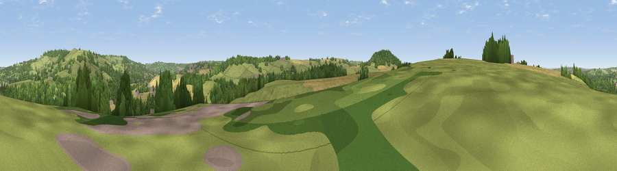

Viewpoint near Corston
#34536 in England · top 67% of its area beats it · near CorstonThe view, rendered

A 360° render of this exact spot computed from the terrain model, tree cover and land cover — summer colours, afternoon light, calibrated against photographs of famous viewpoints. Real trees, hedges and buildings will differ in detail.
The panorama
Grey silhouette: terrain skyline in each direction (720 bearings, Earth curvature and refraction included). Dashed green: skyline with trees (+15 m) and buildings (+8 m) as obstacles. Blue strip: how far the ground is visible on each bearing.
Where the view opens
Wedge length = distance to the farthest visible ground on that bearing (vegetation-aware). Rings at 10, 25 and 50 km.
What fills the view
43% grassland · 31% woodland · 21% cropland · 5% built-up
Angular shares of the visible panorama (visual magnitude), not map area. Landscape diversity 0.53 (0–1 Shannon).
Key numbers
More beautiful places nearby
The staircase of upgrades: each row has a higher view potential than everything closer. Driving times are estimates from straight-line distance, calibrated against real road routing — check an actual route before setting out.
| Place | Direction | Drive | Score |
|---|---|---|---|
| Viewpoint near Corston | NNW · 1 km | ~2 min | 43.9 |
| Viewpoint near Newton Saint Loe | SE · 2 km | ~5 min | 58.8 |
| Viewpoint near Kelston | NE · 3 km | ~6 min | 74.2 |
| Viewpoint near North Stoke | NNE · 4 km | ~9 min | 75.4 |
| Hanging Hill | NNE · 5 km | ~11 min | 76.4 |
| Beacon Batch | WSW · 22 km | ~37 min | 79.4 |
| Viewpoint near Stinchcombe | N · 33 km | ~51 min | 80.5 |
| Viewpoint near Holford | WSW · 59 km | ~81 min | 80.8 |
51.38702, -2.44580 · source: screening · position refined by local search. Computed location — check access rights before visiting.